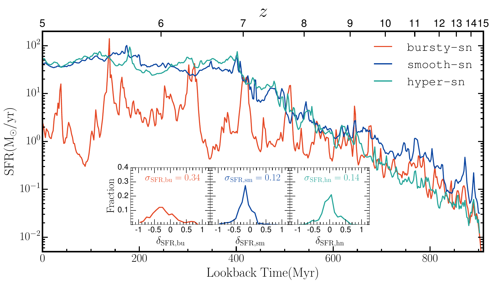
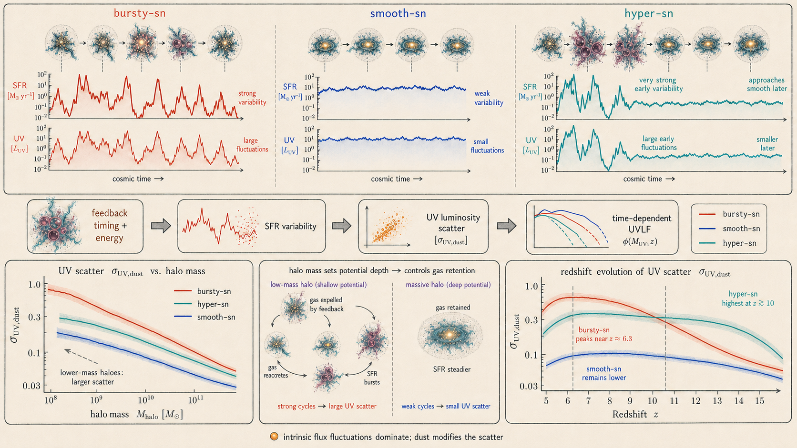

This study measures how population growth, dust, and feedback-driven star-formation fluctuations change the ultraviolet luminosity function over 10–50 million-year intervals.
UV luminosity functionStochastic star formationDustJWST

One halo, three temporal signatures. Concentrated feedback drives order-of-magnitude excursions that are muted when explosions are distributed in time.
First authorArghyadeep Basu
PublishedMNRAS 545 · 2026
Coveragez = 5–12
Time windows10 · 30 · 50 Myr
How stable is the ultraviolet luminosity function?
A halo’s mass evolves comparatively slowly, but its UV luminosity can change rapidly when feedback interrupts and restarts star formation.
The bright end of the luminosity function is often used to judge whether early galaxy formation is unexpectedly efficient. A burst can temporarily move a modest-mass system into a bright selection; a subsequent lull can remove it again. The measured abundance contains both population growth and the duty cycle of luminous phases.
The paper separates these effects by tracking the same SPICE volumes through time. It compares intrinsic and dust-attenuated luminosity functions, measures star-formation variability relative to the mass-dependent main sequence, and follows the resulting UV scatter as a function of halo mass and redshift.
Measure variability without imposing a fixed UV conversion
Luminosity
Build the 1500 Å emission from stellar populations
UV luminosities are evaluated in a 10 Å band around 1500 Å using BPASS v2.2.1 spectral-energy distributions and a Chabrier IMF. This preserves the age- and metallicity-dependent relation between star formation and UV output.
Dust
Attenuate along many directions
RASCAS casts 100 rays from each stellar particle to the halo virial radius. The resulting solid-angle sampling connects attenuation to the local metal and ionisation structure rather than applying one global correction.
Statistic
Compare each halo with its contemporaries
The SFR deviation is measured relative to the median relation in halo-mass and 100 Myr redshift bins. Its standard deviation quantifies burstiness; equivalent UV statistics are then evaluated over 10, 30, and 50 Myr windows.
The UVLF moves around its reference state
Figure 3, Basu et al. (2026). Curves show the dust-attenuated UVLF 10, 30, and 50 Myr before and after reference snapshots near z ≈ 10 and 8. Bursty-SN shows the least coherent and largest excursions. Plot cropped from the arXiv paper.
Columns
The left column is centred near z ≈ 10; the right near z ≈ 8. Each compares seven times spanning 100 Myr around the reference state.
Rows
Bursty-SN, Smooth-SN, and Hyper-SN occupy the top, middle, and bottom rows. Colour intensity distinguishes earlier and later curves.
Two kinds of motion
Near z ≈ 10, rapid population growth raises all models. By z ≈ 8, feedback-driven luminosity fluctuations are easier to isolate, especially in Bursty-SN.
What controls the variability
01
Current UVLF data do not select one model
All three runs broadly reproduce observed dust-attenuated luminosity functions through z ≈ 11–12 over the magnitude range present in the volume, despite distinct star-formation histories.
02
Low stellar mass does not always mean UV faint
Systems with only about 106.5–7 M⊙ in stars can enter the dust-corrected bright sample with MUV ≤ -17. The contributing mass distribution is broad at every redshift.
03
Bursty histories span orders of magnitude
For the most massive matched halo at z = 5, Bursty-SN produces SFR excursions up to two orders of magnitude. Its measured SFR scatter is more than twice the Smooth-SN value.
04
The shallower the potential, the larger the response
All feedback models produce more UV variability in haloes below 109 M⊙. In the lowest mass bin, the mean dust-attenuated scatter is about 1.47, 1.10, and 1.12 for Bursty-SN, Smooth-SN, and Hyper-SN.
05
Hypernovae matter most early
Above z ≈ 10, Hyper-SN can generate the largest variability in haloes above 109 M⊙. As enrichment lowers the hypernova fraction, its behaviour approaches Smooth-SN.
06
Bursty-SN peaks at intermediate redshift
Its average UV scatter rises below z ≈ 10, reaches roughly two near z ≈ 6.3, and then falls. The paper links this non-monotonic behaviour to more than halo assembly alone.
The bright-end tension is partly a duty-cycle problem
Population growth versus flicker
At the earliest times, more galaxies are simply forming and growing. Later, the relative motion of individual systems around the mean relation becomes a larger part of the UVLF evolution.
Dust can move with the burst
Because attenuation is tied to the simulated gas and metal distribution, UV scatter reflects both changing stellar output and the feedback-driven restructuring of obscuring material.
Bright samples can include modest haloes
A luminous selection is not a clean halo-mass selection when UV output is highly variable. That widens the range of assembly histories represented in JWST samples.
Variability helps, but is not unique
The predicted scatter overlaps observational and theoretical estimates with wide uncertainties. UVLF variability can ease the bright-galaxy tension without uniquely identifying the responsible feedback model.
Variability is not one universal duty cycle
Bursty feedback produces the largest and most persistent fluctuations in star formation and ultraviolet luminosity. Smooth feedback remains comparatively steady, while the hypernova model is strongly variable at early times and approaches the smooth model as the hypernova fraction declines.
All three prescriptions also predict larger ultraviolet scatter toward lower halo mass. Shallow potential wells allow repeated inflow, star formation, and outflow cycles to perturb the light more efficiently; massive haloes retain their gas and occupy a narrower luminosity range. High-redshift number counts therefore require a mass- and redshift-dependent distribution of UV luminosity, not a single mean mass-to-light conversion or a generic burst correction.

The variability has a model, mass, and time dependenceThe upper histories encode the three feedback signatures: recurrent bursty excursions, a steadier smooth sequence, and early hypernova disruption followed by convergence. The lower synthesis follows the paper’s declining UV scatter with halo mass, with bursty feedback remaining highest. The curves are explanatory, not a replacement for the quantitative figures.
Feedback is central, but not acting alone
Interpretive boundaries
The finite box does not sample the rarest overdensities or the most luminous observed galaxies, and it contains no black-hole feedback.
Tests on smaller subvolumes show little change in the measured scatter, but that does not replace a larger cosmological volume with a different high-mass population.
Gas accretion, ISM turbulence, the UV background, morphology, and halo growth can all contribute to the redshift trend; the peak near z ≈ 6.3 is not assigned to one mechanism.
Current observational and theoretical scatter is broad enough that the three SPICE feedback prescriptions cannot yet be cleanly separated by UV variability alone.
The team intends to release documented derived products associated with this study. When a collection is ready, the Data index will provide its files, version, licence, documentation, and preferred citation. No public release is advertised yet.